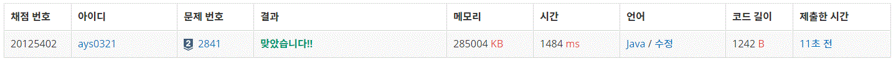

2841번 외계인의 기타 연주
문제요약
보통 기타는 1번 줄부터 6번 줄까지 총 6개의 줄이 있고, 각 줄은 P개의 프렛으로 나누어져 있다. 프렛의 번호도 1번부터 P번까지 나누어져 있다.
멜로디는 음의 연속이고, 각 음은 줄에서 해당하는 프렛을 누르고 줄을 튕기면 연주할 수 있다. 예를 들면, 4번 줄의 8번 프렛을 누르고 튕길 수 있다. 만약, 어떤 줄의 프렛을 여러 개 누르고 있다면, 가장 높은 프렛의 음이 발생한다.
예를 들어, 3번 줄의 5번 프렛을 이미 누르고 있다고 하자. 이때, 7번 프렛을 누른 음을 연주하려면, 5번 프렛을 누르는 손을 떼지 않고 다른 손가락으로 7번 프렛을 누르고 줄을 튕기면 된다. 여기서 2번 프렛의 음을 연주하려고 한다면, 5번과 7번을 누르던 손가락을 뗀 다음에 2번 프렛을 누르고 연주해야 한다.
이렇게 손가락으로 프렛을 한 번 누르거나 떼는 것을 손가락을 한 번 움직였다고 한다. 어떤 멜로디가 주어졌을 때, 손가락의 가장 적게 움직이는 회수를 구하는 프로그램을 작성하시오.
public class Baekjoon2841 {
public static void main(String[] args) {
Scanner sc = new Scanner(System.in);
Stack one = new Stack<>();
Stack two = new Stack<>();
Stack three = new Stack<>();
Stack four = new Stack<>();
Stack five = new Stack<>();
Stack six = new Stack<>();
int n = sc.nextInt();
int p = sc.nextInt();
int count = 0;
while(n-->0) {
int f = sc.nextInt();
int s = sc.nextInt();
switch(f) {
case 1:
count += finger(one,s);
break;
case 2:
count += finger(two,s);
break;
case 3:
count += finger(three,s);
break;
case 4:
count += finger(four,s);
break;
case 5:
count += finger(five,s);
break;
case 6:
count += finger(six,s);
break;
}
}
System.out.print(count);
}
public static int finger(Stack st,int num) {
int count = 0;
if(st.isEmpty()) {
st.push(num);
count++;
}
while(!st.peek().equals(num)) {
if(st.peek() > num) {
st.pop();
count++;
}else if(st.peek() < num){
st.push(num);
count++;
}
if(st.isEmpty()) {
st.push(num);
count++;
}
}
return count;
}
}
기타의 줄 별로 stack을 생성하고 연주할 줄의 피렛이 스택의 가장 위에 오도록 한다.
